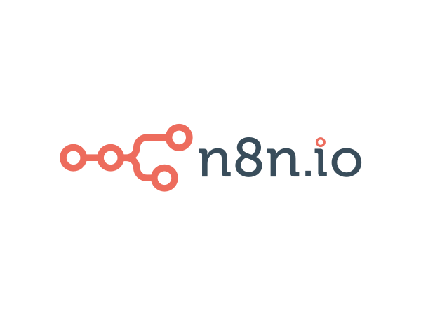

Plugins
Telegram
Slack
Discord
Make

n8n
Telegram
Slack
Discord
Make
n8n
Connect to Telegram
Telegram is a popular instant messaging app known for its speed and security. It offers cross-platform availability, end-to-end encryption for secret chats, and encrypted cloud storage for regular messages.
When you connect your Telegram account, you will be able to recieve form data via messages on Telegram.
Enable/Disable Telegram
Connect to Discord
Discord is a free, voice, video, and text chat platform designed primarily for gamers but has since expanded to various communities and uses. Discord allows users to create and join servers, which are organized into channels
When you connect your Discord channel with a webhook, you will be able to recieve form data via messages in your Discord channel.
Enable/Disable Discord
Connect to Slack
Slack is a collaborative messaging platform designed for teams to communicate and work together efficiently. It offers organized channels for different topics, direct messaging, and group chats. Slack integrates with numerous third-party services, enabling seamless workflow automation
When you connect your Slack channel, you will be able to recieve form data via messages in your Slack channel.
Connected Channel: {{this.slackChannelName}}
Enable/Disable Slack
Connect to Make
Make is a visual automation platform that allows users to connect apps and automate workflows without coding. It supports integrations with a wide range of applications, enabling users to create complex multi-step workflows.
When you connect your make scenario to formbee with a webhook, you will be able to create workflows with your form data.
Enable/Disable Make
Connect to n8n
n8n is an open-source workflow automation tool that allows users to connect different applications and automate tasks through a visual interface. It supports a wide range of integrations and enables the creation of complex workflows with minimal coding.
When you connect your n8n workflow with a webhook, you will be able to create n8n workflows with your form data.
Enable/Disable n8n